Skill
Programming
ผมใช้ภาษา C,C++ ในการเขียนโปรแกรมสำหรับการแข่งขันโอลิมปิก และใช้ Java สำหรับพัฒนา Android (รวมถึงใช้ชั้นเรียนด้วย) JS, PHP, CoffeeScript สำหรับงานด้านเว็บและ Python สำหรับงานประเภทที่ไม่เน้น interface เช่นดึงข้อมูลจาก API ต่างๆ ภายหลังผมได้ศึกษา Node.js แล้วก็แทบเป็นภาษาหลักในการเขียนเว็บปัจจุบันแล้ว
Deprecated ภาษาที่เลิกเขียนแล้ว
ActionScript
Currently Work ภาษาโปรแกรมที่เขียนอยู่ปัจจุบันนี้
C, C++
Java
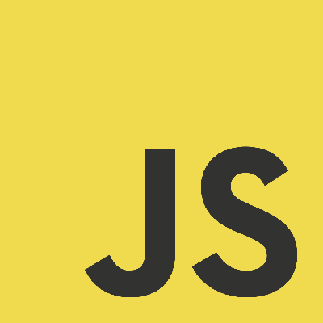
Javascript
PHP
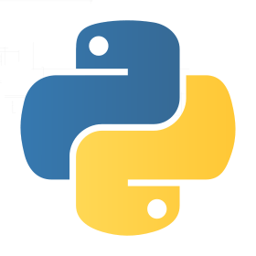
Python
CoffeeScript
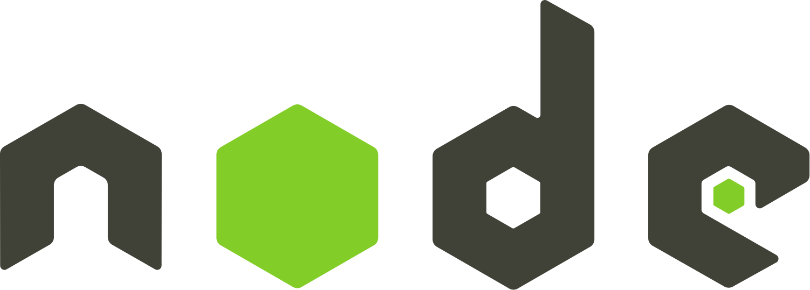
Node.js
Design เครื่องมือที่ใช้สำหรับ Design
Photoshop
Illustrator
Flash
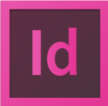
InDesign
Dreaweaver
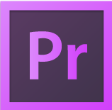
Premiere Pro
After Effect
Tools Library & Framework ที่ใช้
jQuery
CodeIgniter
SASS & SCSS
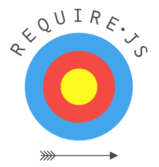
RequireJS
LESS
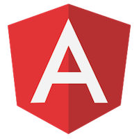
Angular 2
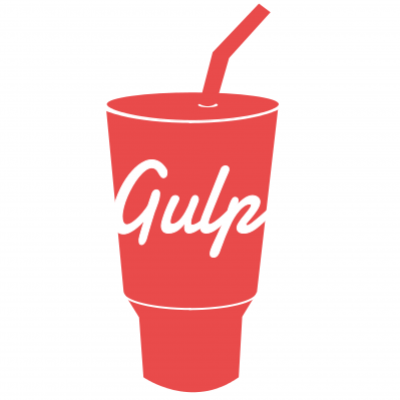
Gulp
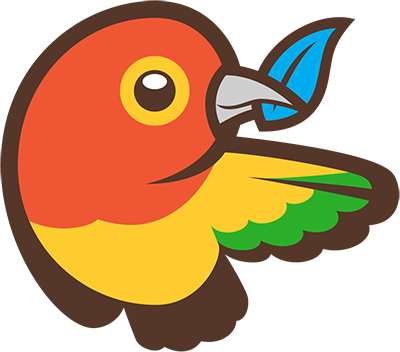
Bower
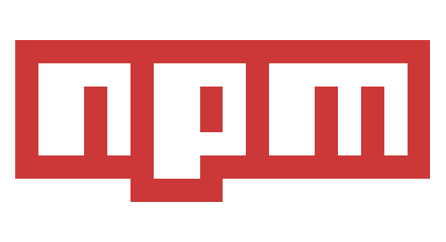
NPM
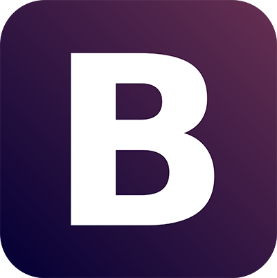
Bootstrap
Foundation
Jade
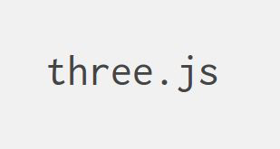
THREE.js
Paper.js
Team Tools ที่ใช้สำหรับ Teamwork
Git
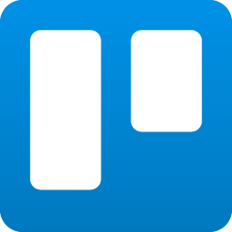
Trello
Slack
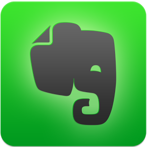
Evernote